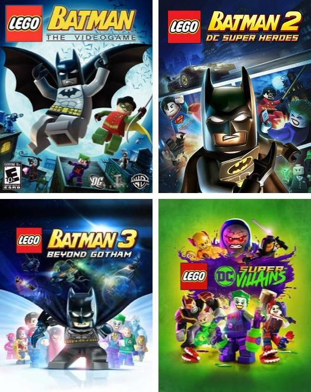

LEGO batman: De DC Comic LEGO-games zijn een populaire reeks videogames waarin de bekende superhelden en schurken uit het DC-universum worden gecombineerd met de humor en stijl van LEGO. In deze spellen spelen personages zoals **Batman, Superman, Wonder Woman, The Joker en Lex Luthor de hoofdrol in avonturen vol actie, puzzels en komische momenten. Een van de bekendste titels is LEGO Batman: The Videogame, waarin spelers zowel als helden als schurken kunnen spelen. Later volgden spellen zoals LEGO Batman 2: DC Super Heroes, waarin voor het eerst stemmen werden toegevoegd en een open wereld (Gotham City) verkend kon worden. Ook LEGO Batman 3: Beyond Gotham breidde het universum verder uit met ruimteavonturen en nog meer speelbare personages. De games staan bekend om hun toegankelijkheid: ze zijn geschikt voor alle leeftijden, eenvoudig te spelen en vaak bedoeld om samen in co-op te spelen. Tegelijkertijd bevatten ze genoeg uitdagingen en verzamelobjecten om ook ervaren spelers te blijven boeien. De typische LEGO-humor zorgt ervoor dat zelfs donkere DC-verhalen luchtig en grappig worden verteld. Kortom, de DC Comic LEGO-games bieden een leuke en speelse manier om het DC-universum te ontdekken, waarbij actie, humor en creativiteit centraal staan.
LEGO DC Super-Villains: LEGO DC Super-Villains is een unieke game binnen de DC Comic LEGO-reeks, omdat spelers dit keer niet in de huid kruipen van de superhelden, maar van de schurken. Bekende DC-slechteriken zoals The Joker, Harley Quinn, Lex Luthor, The Riddler en Darkseid spelen een centrale rol in het verhaal. Wat deze game extra bijzonder maakt, is dat spelers voor het eerst een eigen personage kunnen maken. Deze zelfgemaakte schurk krijgt speciale krachten en groeit mee met het verhaal. Samen met de bekende DC-schurken moet de speler het opnemen tegen een mysterieuze nieuwe groep, het Justice Syndicate, dat de plaats van de Justice League heeft ingenomen. De game combineert, net als de andere LEGO DC-games, actie, puzzels en humor. De wereld is groot en bestaat uit verschillende DC-locaties, zoals Gotham City en Metropolis. Dankzij de typische LEGO-stijl en grappige dialogen wordt het verhaal luchtig en leuk verteld, ondanks het focus op schurken. LEGO DC Super-Villains biedt een frisse kijk op het DC-universum en laat zien dat zelfs de slechteriken helden kunnen zijn… op hun eigen manier.
sofian